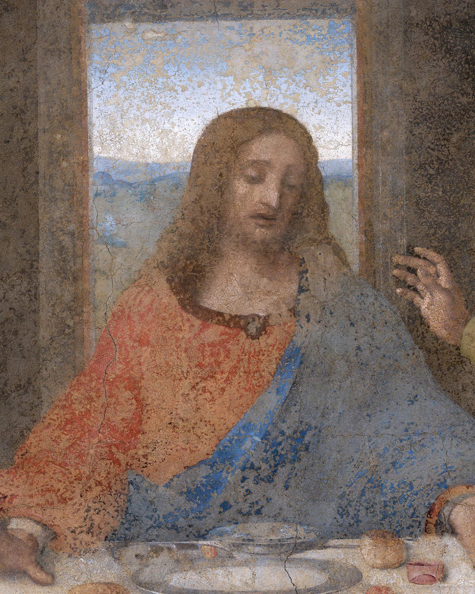
Leonardo put it there. The whole room hangs on it.
Swipe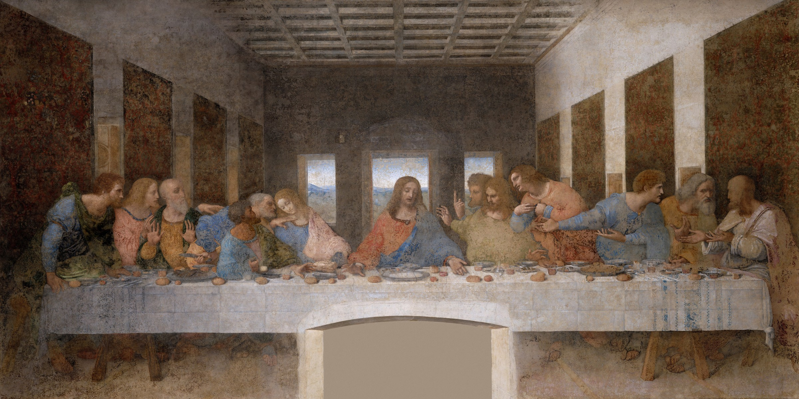
About 4.6 metres tall and 8.8 wide. The friars of Santa Maria delle Grazie ate their meals beneath it.
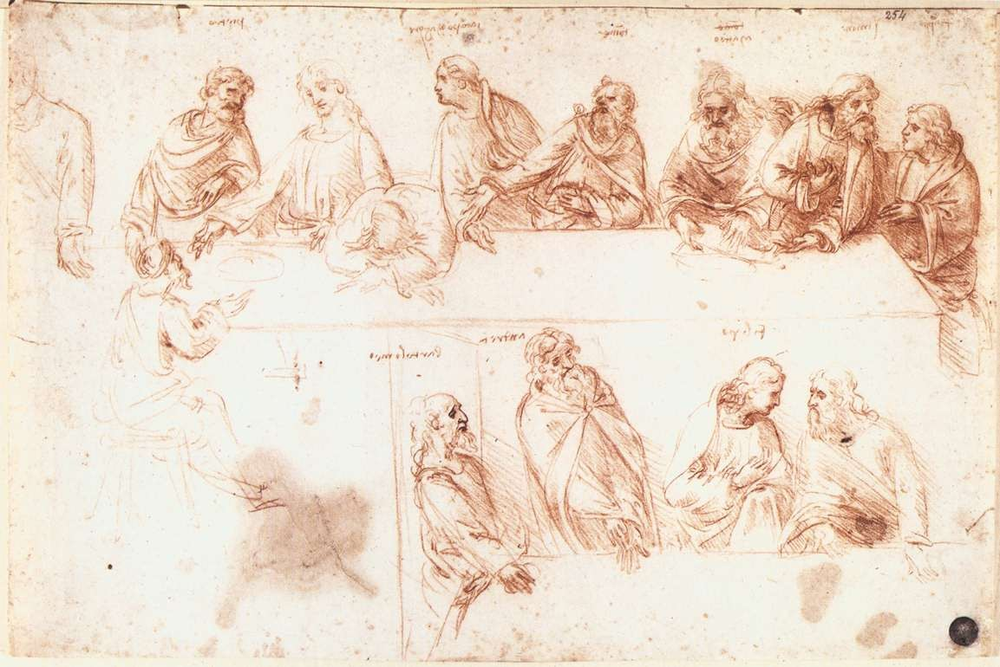
Leonardo's sketch · c. 1494–95 · VeniceOne of you shall betray me.Jesus · Gospel of John 13:21
Leonardo paints the second after the words land. Twelve men, twelve reactions, one shockwave.
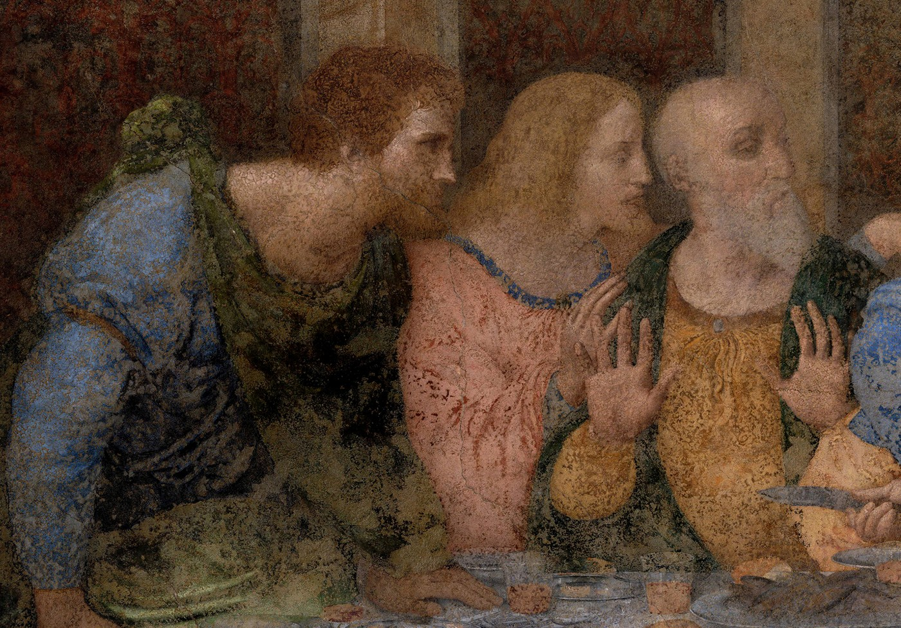
Up on their feet. Andrew's palms fly open.
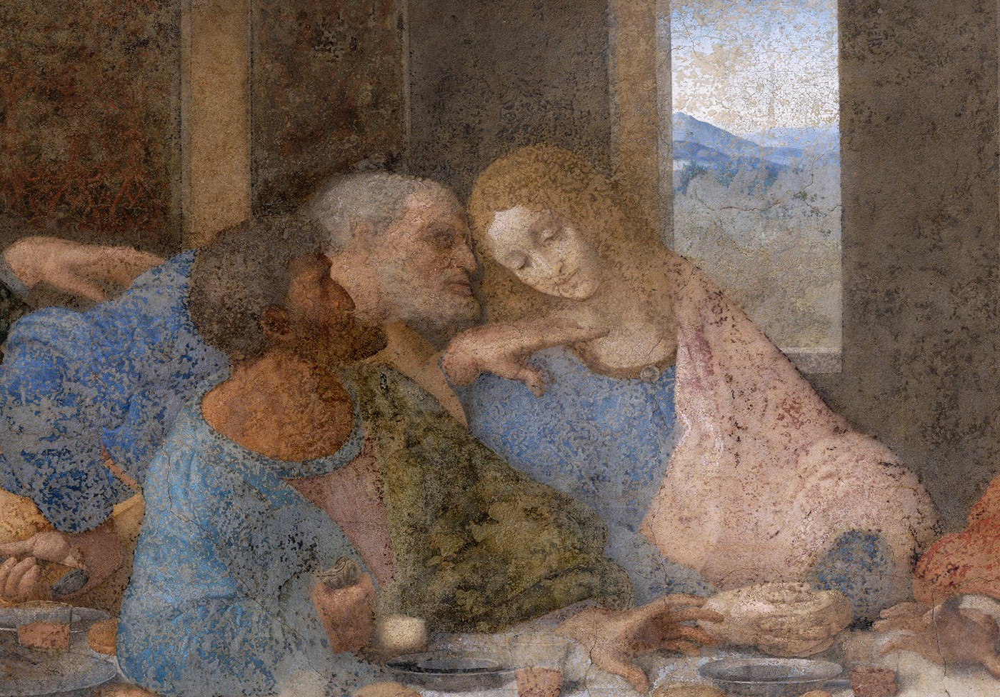
Peter lunges, knife in hand. Judas pulls back.
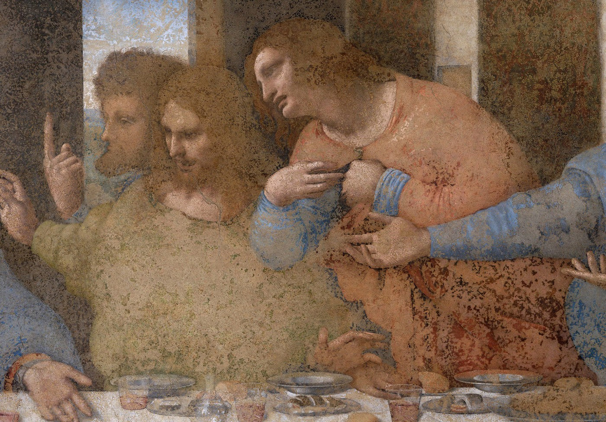
A finger jabs up. Philip presses his chest.
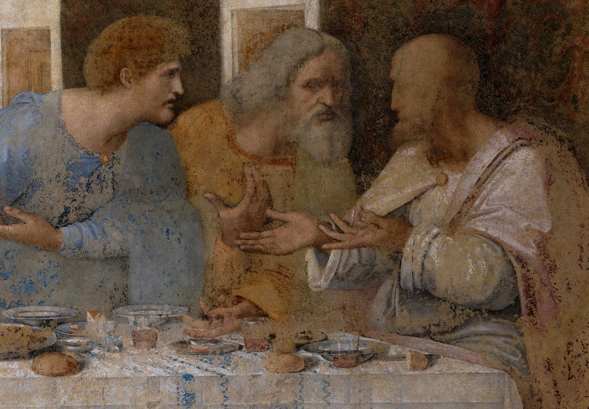
At the far end, they argue it out.
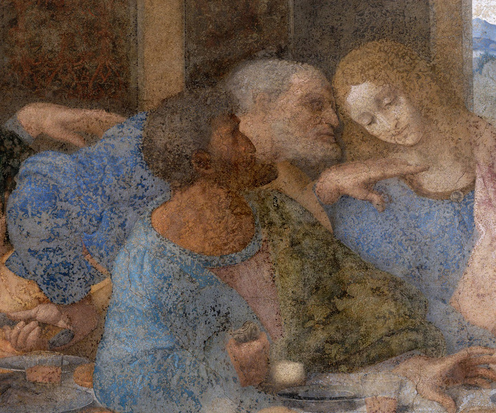
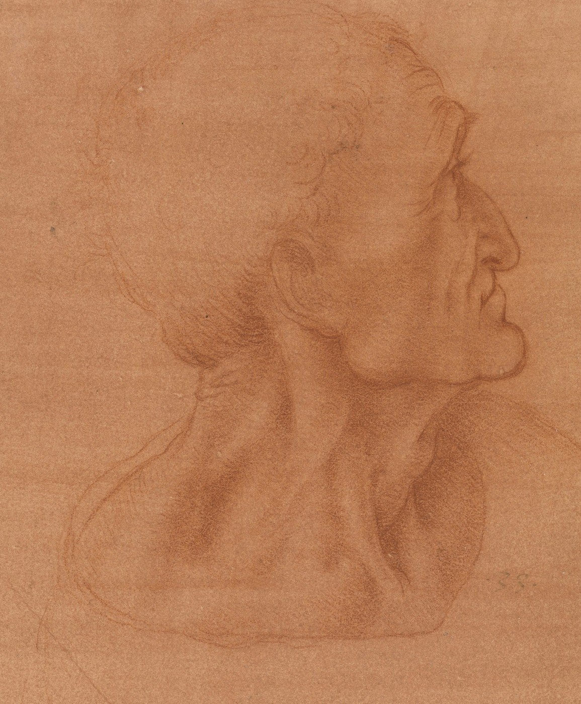
Red chalk studyJudas recoils from the light, a small bag in his fist. The silver, perhaps. Yet Leonardo's study is no monster: “mild surprise rather than evil intent,” says the Royal Collection.
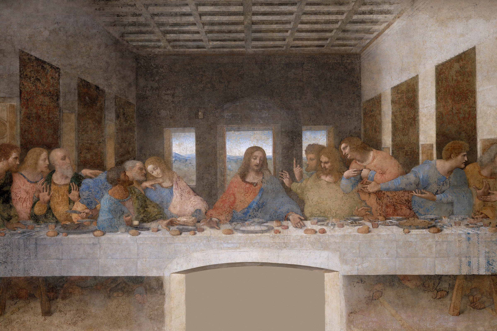
Ceiling beams, walls, hangings: all converge on Christ's right temple. Restorers found a tiny nail hole there. Leonardo likely tied strings to it to rule the room.
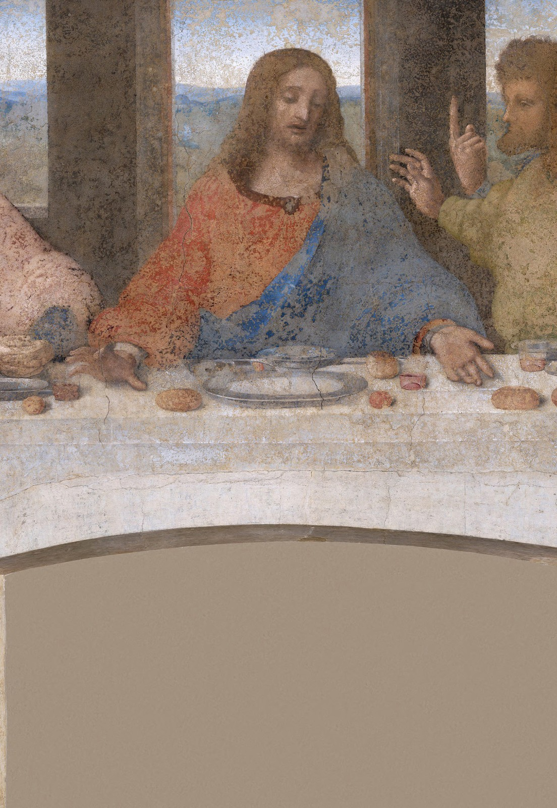
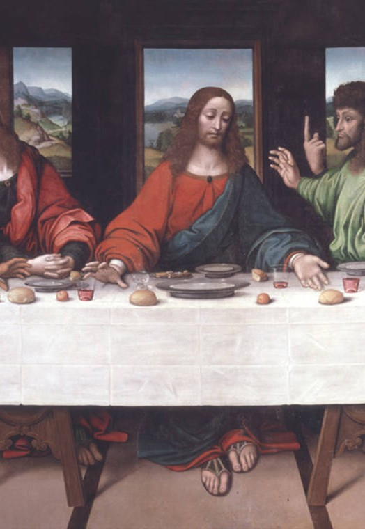
The friars cut a doorway through the wall. A full-size copy by Giampietrino, now with the Royal Academy, still shows the feet and Judas's spilled salt. Restorers leaned on it.
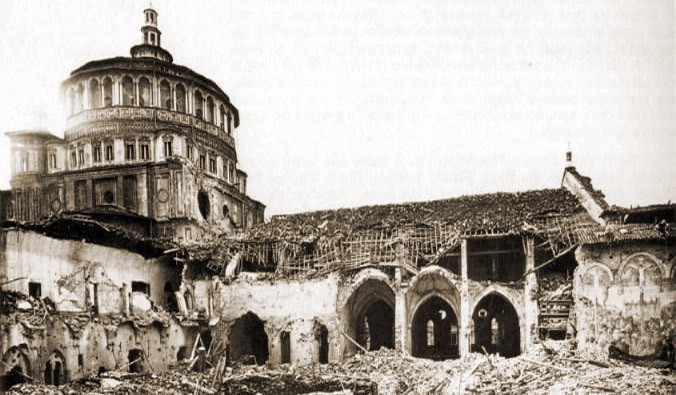
August 1943 · the refectory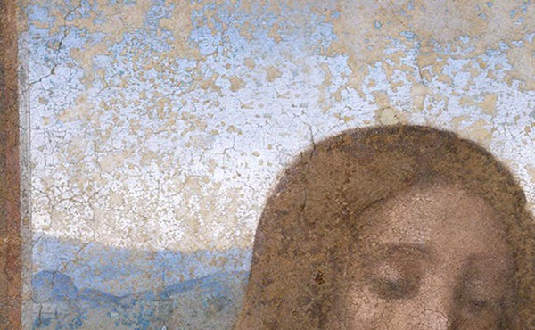
Flaking paint, up close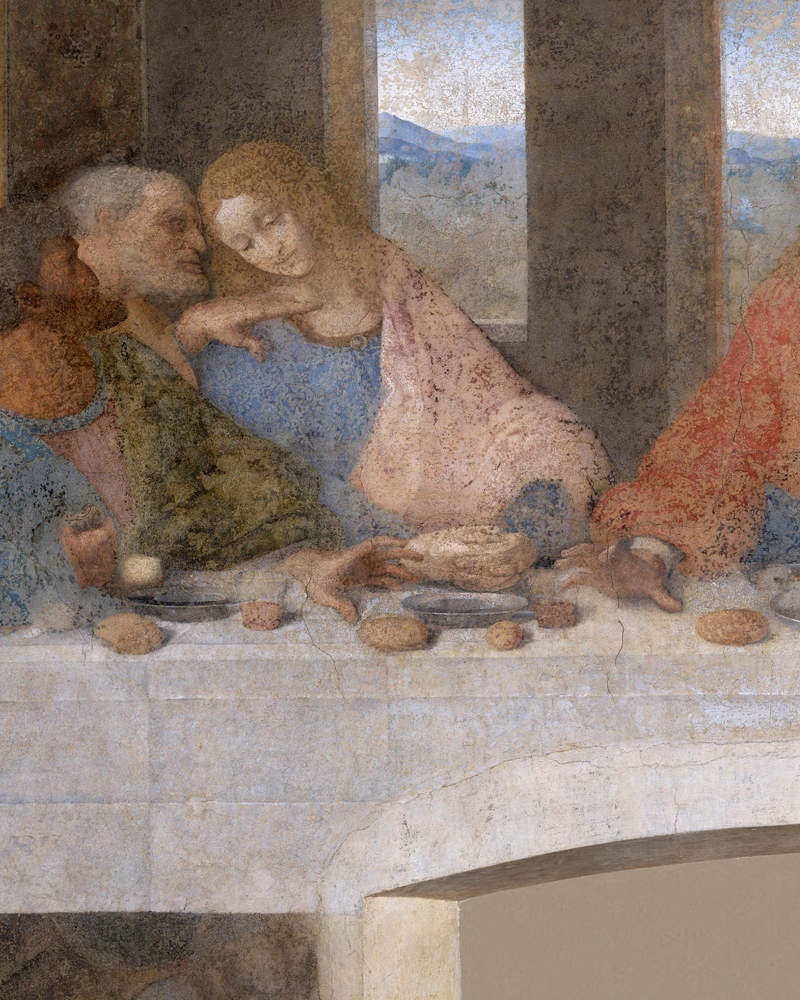
The Da Vinci Code made it a theory. Art historians see John, the youngest disciple, painted young and beardless as tradition had it, tipping toward Peter's whisper.
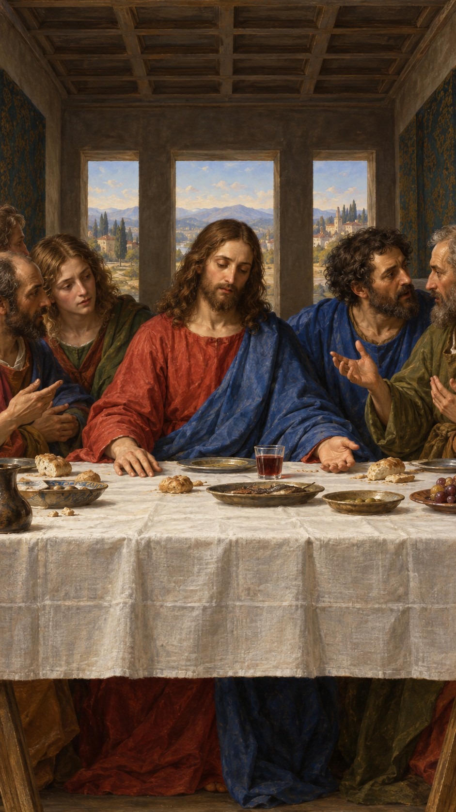
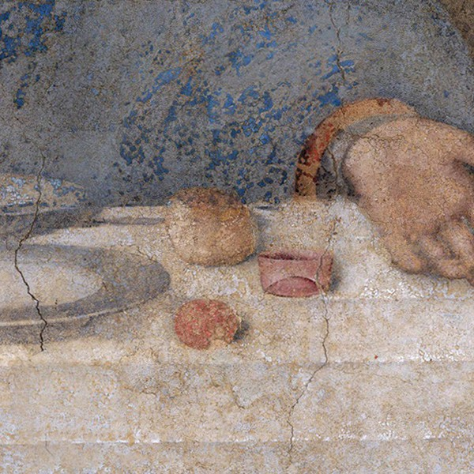
We walk the table to Jesus, then dive into his wine glass.